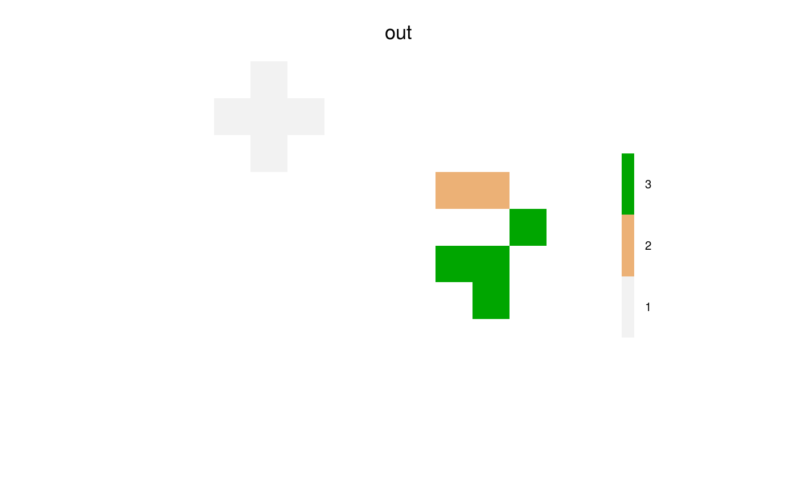

This can be used to simulate fires, seed dispersal, calculation of iterative,
concentric, symmetric (currently) landscape values and many other things.
Essentially, it starts from a collection of cells (start, called "events")
and spreads to neighbours, according to the directions
and spreadProb with modifications due to other arguments. NOTE:
the spread function is similar, but sometimes slightly faster, but less
robust, and more difficult to use iteratively.
spread2(landscape, start = ncell(landscape)/2 - ncol(landscape)/2, spreadProb = 0.23, asRaster = TRUE, maxSize, exactSize, directions = 8L, iterations = 1000000L, returnDistances = FALSE, returnFrom = FALSE, spreadProbRel = NA_real_, plot.it = FALSE, circle = FALSE, asymmetry = NA_real_, asymmetryAngle = NA_real_, allowOverlap = FALSE, neighProbs = NA_real_, skipChecks = FALSE) # S4 method for RasterLayer spread2(landscape, start = ncell(landscape)/2 - ncol(landscape)/2, spreadProb = 0.23, asRaster = TRUE, maxSize, exactSize, directions = 8L, iterations = 1000000L, returnDistances = FALSE, returnFrom = FALSE, spreadProbRel = NA_real_, plot.it = FALSE, circle = FALSE, asymmetry = NA_real_, asymmetryAngle = NA_real_, allowOverlap = FALSE, neighProbs = NA_real_, skipChecks = FALSE)
| landscape | Required. A |
|---|---|
| start | Required. Either a vector of pixel numbers to initiate spreading, or a
data.table that is the output of a previous |
| spreadProb | Numeric of length 1 or |
| asRaster | Logical, length 1. If |
| maxSize | Numeric. Maximum number of cells for a single or
all events to be spread2. Recycled to match |
| exactSize | Numeric vector, length 1 or |
| directions | The number adjacent cells in which to look; default is 8 (Queen case). Can only be 4 or 8. |
| iterations | Number of iterations to spread2.
Leaving this |
| returnDistances | Logical. Should the function include a column with the individual cell distances from the locus where that event started. Default is FALSE. See Details. |
| returnFrom | Logical. Should the function return a column with the source, i.e, the lag 1 "from" pixel, for each iteration. |
| spreadProbRel | Optional |
| plot.it | If TRUE, then plot the raster at every iteraction, so one can watch the spread2 event grow. |
| circle | Logical. If TRUE, then outward spread2 will be by equidistant rings,
rather than solely by adjacent cells (via |
| asymmetry | A numeric or |
| asymmetryAngle | A numeric or |
| allowOverlap | Logical. If |
| neighProbs | An optional numeric vector, whose sum is 1. It indicates the
probabilities that an individual
spread iteration will spread to |
| skipChecks | Logical. If TRUE, the argument checking (i.e., assertions) will be skipped. This should likely only be used once it is clear that the function arguments are well understood and function speed is of the primary improtance. This is likely most useful in repeated iteration cases i.e., if this call is using the previous output from this same function. |
Either a data.table (asRaster=FALSE) or a RasterLayer
(asRaster=TRUE, the default).
The data.table will have one attribute named spreadState, which
is a list containing a data.table of current cluster-level information
about the spread events.
If asRaster=TRUE, then the data.table (with its spreadState
attribute) will be attached to the Raster as an attribute named pixel as it
provides pixel-level information about the spread events.
The RasterLayer represents every cell in which a successful spread2 event occurred.
For the case of, say, a fire this would represent every cell that burned.
If allowOverlap is TRUE, the return will always be a data.table.
If asRaster is FALSE, then this function returns a
data.table with 3 (or 4 if returnFrom is TRUE) columns:
initialPixels |
the initial cell number of that particular spread2 event. |
pixels |
The cell indices of cells that have been touched by the spread2 algorithm. |
state |
a logical indicating whether the cell is active (i.e., could still be a source for spreading) or not (no spreading will occur from these cells). |
from |
The pixel indices that were the immediately preceeding
"source" for each pixels, i.e., the lag 1 pixels.
Only returned if returnFrom is TRUE |
The attribute saved with the name "spreadState" (e.g., attr(output, "spreadState"))
includes a data.table with columns:
id |
An arbitrary code, from 1 to length(start) for each "event". |
initialPixels |
the initial cell number of that particular spread2 event. |
numRetries |
The number of re-starts the event did because it got
stuck (normally only because exactSize was used
and was not achieved. |
maxSize |
The number of pixels that were provided as inputs via
maxSize or exactSize. |
size |
The current size, in pixels, of each event. |
and several other objects that provide significant speed ups in iterative calls to
spread2. If the user runs spread2 iteratively, there will likely be significant
speed gains if the data.table passed in to start should have the attribute
attached, or re-attached if it was lost, e.g., via
setattr(outInput, "spreadState", attr(out, "spreadState")), where out is the
returned data.table from the previous call to spread2, and outInput is
the modified data.table. Currently, the modified data.table must have the
same order as out.
There are 2 main underlying algorithms for active cells to "spread" to
nearby cells (adjacent cells): spreadProb and neighProb.
Using spreadProb, every "active" pixel will assess all
neighbours (either 4 or 8, depending on directions), and will "activate"
whichever neighbours successfully pass independent calls to
runif(1,0,1)<spreadProb.
The algorithm will iterate again and again, each time starting from the newly
"activated" cells. Several built-in decisions are as follows.
1. no active cell can active a cell that was already activated by
the same event (i.e., "it won't go backwards"). 2. If allowOverlap is
FALSE, then the previous rule will also apply, regardless of which
"event" caused the pixels to be previously active.
This function can be interrupted before all active cells are exhausted if
the iterations value is reached before there are no more active
cells to spread2 into. The interrupted output (a data.table) can be passed
subsequently as an input to this same function (as start).
This is intended to be used for situations where external events happen during
a spread2 event, or where one or more arguments to the spread2 function
change before a spread2 event is completed.
For example, if it is desired that the spreadProb change before a
spread2 event is completed because, for example, a fire is spreading, and a
new set of conditions arise due to a change in weather.
asymmetry here is slightly different than in the spread function,
so that it can deal with a RasterLayer of asymmetryAngle.
Here, the spreadProb values of a given set of neighbours around each active pixel
are adjusted to create adjustedSpreadProb which is calculated maintain the
following
two qualities: $$mean(spreadProb) = mean(ajustedSpreadProb)$$ and
$$max(spreadProb)/min(spreadProb) = asymmetry$$ along the axis of
asymmetryAngle. NOTE: this means that the 8 neighbours around an active
cell may not fulfill the preceeding equality if asymmetryAngle is not
exactly one of the 8 angles of the 8 neighbours. This means that
$$max(spreadProb)/min(spreadProb)$$ will generally be less than
asymmetry, for the 8 neighbours. The exact adjustment to the spreadProb
is calculated with:
$$angleQuality <- (cos(angles - rad(asymmetryAngle))+1)/2$$
which is multiplied to get an angle-adjusted spreadProb:
$$spreadProbAdj <- actualSpreadProb * angleQuality$$
which is then rescaled:
$$adjustedSpreadProb = (spreadProbAdj - min(spreadProbAdj)) * par2 + par1$$,
where par1 and par2 are parameters calculated internally to make the 2 conditions above true.
If exactSize or maxSize are used, then spreading will continue and stop
before or at maxSize or at exactSize. If iterations is specified,
then the function will end, and the returned data.table will still
may (if maxSize) or will (if exactSize) have at least one active
cell per event that did not already achieve maxSize or exactSize. This
will be very useful to build new, customized higher-level wrapper functions that iteratively
call spread2.
exactSize may not be achieved if there aren't enough cells in the map.
Also, exactSize may not be achieved because the active cells are "stuck",
i.e., they have no unactivated cells to move to; or the spreadProb is low.
In the latter two cases, the algorithm will retry again, but it will only
re-try from the last iterations active cells.
The algorithm will only retry 10 times before quitting.
Currently, there will also be an attempt to "jump" up to four cells away from
the active cells to try to continue spreading.
A common way to use this function is to build wrappers around this, followed
by iterative calls in a while loop. See example.
There are 3 ways for the spread2 to "stop" spreading.
Here, each "event" is defined as all cells that are spawned from each unique
start location.
The ways outlined below are all acting at all times, i.e., they are not
mutually exclusive.
Therefore, it is the user's responsibility to make sure the different rules
are interacting with each other correctly.
spreadProb |
Probabilistically, if spreadProb is low enough, active spreading events will stop. In practice, this number generally should be below 0.3 to actually see an event stop |
maxSize |
This is the number of cells that are "successfully" turned
on during a spreading event. spreadProb will still
be active, so, it is possible that the end size of each event
is smaller than maxSize, but they will not be greater
than maxSize |
exactSize |
This is the number of cells that are "successfully" turned
on during a spreading event. This will override an event that
stops probabilistically via spreadProb, but forcing
its last set of active cells to try again to find neighbours.
It will try 10 times per event, before giving up.
During those 10 times, it will try twice to "jump" up to
4 cells outwards from each of the active cells. |
iterations |
This is a hard cap on the number of internal iterations to
complete before returning the current state of the system
as a data.table. |
This function can be used iteratively, with relatively little overhead compared to using
it non-iteratively. In general, this function can be called with arguments set as user
needs, and with specifying iterations = 1 (say). This means that the function will spread
outwards 1 iteration, then stop. The returned object will be a data.table or RasterLayer
that can be passed immediately back as the start argument into a subsequent
call to spread2. This means that every argument can be updated at each iteration.
When using this function iteratively, there are several things to keep in mind.
The output will likely be sorted differently than the input (i.e., the
order of start, if a vector, may not be the same order as that returned).
This means that when passing the same object back into the next iteration of the
function call, maxSize or exactSize may not be in the same order.
To get the same order, the easiest thing to do is sort the initial start
objects by their pixel location, increasing.
Then, of course, sorting any vectorized arguments (e.g., maxSize) accordingly.
NOTE: the data.table or RasterLayer should not use be altered
when passed back into spread2.
spread for a different implementation of the same alogorithm.
spread is less robust but it is often slightly faster.
library(raster) library(quickPlot) a <- raster(extent(0, 10, 0, 10), res = 1) sams <- sort(sample(ncell(a), 3)) # Simple use -- similar to spread(...) out <- spread2(a, start = sams, 0.225) if (interactive()) { clearPlot() Plot(out) }# Use maxSize -- this gives an upper limit maxSizes <- sort(sample(1:10, size = length(sams))) out <- spread2(a, start = sams, 0.225, maxSize = maxSizes, asRaster = FALSE) # check TRUE using data.table .N out[, .N, by = "initialPixels"]$n <= maxSizes#> logical(0)# Use exactSize -- gives an exact size, if there is enough space on the Raster exactSizes <- maxSizes out <- spread2(a, start = sams, spreadProb = 0.225, exactSize = exactSizes, asRaster = FALSE) out[, .N, by = "initialPixels"]$n == maxSizes # should be TRUE TRUE TRUE#> logical(0)# Use exactSize -- but where it can't be achieved exactSizes <- sort(sample(100:110, size = length(sams))) out <- spread2(a, start = sams, 1, exactSize = exactSizes) # Iterative calling -- create a function with a high escape probability spreadWithEscape <- function(ras, start, escapeProb, spreadProb) { out <- spread2(ras, start = sams, spreadProb = escapeProb, asRaster = FALSE) while (any(out$state == "sourceActive")) { # pass in previous output as start out <- spread2(ras, start = out, spreadProb = spreadProb, asRaster = FALSE, skipChecks = TRUE) # skipChecks for speed } out } set.seed(421) out1 <- spreadWithEscape(a, sams, escapeProb = 0.25, spreadProb = 0.225) set.seed(421) out2 <- spread2(a, sams, 0.225, asRaster = FALSE) # The one with high escape probability is larger (most of the time) NROW(out1) > NROW(out2)#> [1] FALSE## Use neighProbs, with a spreadProb that is a RasterLayer # Create a raster of different values, which will be the relative probabilities # i.e., they are rescaled to relative probabilities within the 8 neighbour choices. # The neighProbs below means 70% of the time, 1 neighbour will be chosen, # 30% of the time 2 neighbours. # The cells with spreadProb of 5 are 5 times more likely than cells with 1 to be chosen, # when they are both within the 8 neighbours sp <- raster(extent(0, 3, 0, 3), res = 1, vals = 1:9) #small raster, simple values # Check neighProbs worked out <- list() # enough replicates to see stabilized probabilities for (i in 1:100) { out[[i]] <- spread2(sp, spreadProbRel = sp, spreadProb = 1, start = 5, iterations = 1, neighProbs = c(1), asRaster = FALSE) } out <- data.table::rbindlist(out)[pixels != 5] # remove starting cell table(sp[out$pixels])#> #> 1 2 3 4 6 7 8 9 #> 2 1 5 14 8 19 24 27# should be non-significant -- note no 5 because that was the starting cell # This tests whether the null model is true ... there should be proportions # equivalent to 1:2:3:4:6:7:8:9 ... i.e,. cell 9 should have 9x as many events # spread to it as cell 1. This comes from sp object above which is providing # the relative spread probabilities keep <- c(1:4, 6:9) chisq.test(keep, unname(tabulate(sp[out$pixels], 9)[keep]), simulate.p.value = TRUE)#> #> Pearson's Chi-squared test with simulated p-value (based on 2000 #> replicates) #> #> data: keep and unname(tabulate(sp[out$pixels], 9)[keep]) #> X-squared = 56, df = NA, p-value = 1 #>## Example showing asymmetry sams <- ncell(a) / 4 - ncol(a) / 4 * 3 circs <- spread2(a, spreadProb = 0.213, start = sams, asymmetry = 2, asymmetryAngle = 135, asRaster = TRUE) # ADVANCED: Estimate spreadProb when using asymmetry, such that the expected # event size is the same as without using asymmetry ras <- raster(a) ras[] <- 1 if (interactive()) { n <- 100 sizes <- integer(n) for (i in 1:n) { circs <- spread2(ras, spreadProb = 0.225, start = round(ncell(ras) / 4 - ncol(ras) / 4 * 3), asRaster = FALSE) sizes[i] <- circs[, .N] } goalSize <- mean(sizes) library(parallel) library(DEoptim) cl <- makeCluster(pmin(10, detectCores() - 2)) # only need 10 cores for 10 populations in DEoptim parallel::clusterEvalQ(cl, { library(SpaDES.tools) library(raster) library(fpCompare) }) objFn <- function(sp, n = 20, ras, goalSize) { sizes <- integer(n) for (i in 1:n) { circs <- spread2(ras, spreadProb = sp, start = ncell(ras) / 4 - ncol(ras) / 4 * 3, asymmetry = 2, asymmetryAngle = 135, asRaster = FALSE) sizes[i] <- circs[, .N] } abs(mean(sizes) - goalSize) } aa <- DEoptim(objFn, lower = 0.2, upper = 0.23, control = DEoptim.control(cluster = cl, NP = 10, VTR = 0.02, initialpop = as.matrix(rnorm(10, 0.213, 0.001))), ras = a, goalSize = goalSize) # The value of spreadProb that will give the same expected event sizes to spreadProb = 0.225 is: sp <- aa$optim$bestmem circs <- spread2(ras, spreadProb = sp, start = ncell(ras) / 4 - ncol(ras) / 4 * 3, asymmetry = 2, asymmetryAngle = 135, asRaster = FALSE) stopCluster(cl) }#> #> #> #>#> Iteration: 1 bestvalit: 0.570000 bestmemit: 0.212429 #> Iteration: 2 bestvalit: 0.570000 bestmemit: 0.212429 #> Iteration: 3 bestvalit: 0.570000 bestmemit: 0.212429 #> Iteration: 4 bestvalit: 0.480000 bestmemit: 0.211462 #> Iteration: 5 bestvalit: 0.480000 bestmemit: 0.211462 #> Iteration: 6 bestvalit: 0.480000 bestmemit: 0.211462 #> Iteration: 7 bestvalit: 0.130000 bestmemit: 0.211435 #> Iteration: 8 bestvalit: 0.130000 bestmemit: 0.211435 #> Iteration: 9 bestvalit: 0.070000 bestmemit: 0.211487 #> Iteration: 10 bestvalit: 0.070000 bestmemit: 0.211487 #> Iteration: 11 bestvalit: 0.070000 bestmemit: 0.211487 #> Iteration: 12 bestvalit: 0.070000 bestmemit: 0.211487 #> Iteration: 13 bestvalit: 0.070000 bestmemit: 0.211487 #> Iteration: 14 bestvalit: 0.070000 bestmemit: 0.211487 #> Iteration: 15 bestvalit: 0.070000 bestmemit: 0.212009 #> Iteration: 16 bestvalit: 0.070000 bestmemit: 0.212009 #> Iteration: 17 bestvalit: 0.070000 bestmemit: 0.212009 #> Iteration: 18 bestvalit: 0.070000 bestmemit: 0.212009 #> Iteration: 19 bestvalit: 0.070000 bestmemit: 0.212009 #> Iteration: 20 bestvalit: 0.070000 bestmemit: 0.212009 #> Iteration: 21 bestvalit: 0.070000 bestmemit: 0.212009 #> Iteration: 22 bestvalit: 0.070000 bestmemit: 0.212009 #> Iteration: 23 bestvalit: 0.070000 bestmemit: 0.212009 #> Iteration: 24 bestvalit: 0.070000 bestmemit: 0.211568 #> Iteration: 25 bestvalit: 0.070000 bestmemit: 0.211568 #> Iteration: 26 bestvalit: 0.070000 bestmemit: 0.211568 #> Iteration: 27 bestvalit: 0.070000 bestmemit: 0.211568 #> Iteration: 28 bestvalit: 0.070000 bestmemit: 0.211568 #> Iteration: 29 bestvalit: 0.070000 bestmemit: 0.211568 #> Iteration: 30 bestvalit: 0.070000 bestmemit: 0.211568 #> Iteration: 31 bestvalit: 0.070000 bestmemit: 0.211568 #> Iteration: 32 bestvalit: 0.070000 bestmemit: 0.211568 #> Iteration: 33 bestvalit: 0.070000 bestmemit: 0.211568 #> Iteration: 34 bestvalit: 0.070000 bestmemit: 0.211568 #> Iteration: 35 bestvalit: 0.070000 bestmemit: 0.211568 #> Iteration: 36 bestvalit: 0.070000 bestmemit: 0.211568 #> Iteration: 37 bestvalit: 0.070000 bestmemit: 0.211568 #> Iteration: 38 bestvalit: 0.070000 bestmemit: 0.211568 #> Iteration: 39 bestvalit: 0.070000 bestmemit: 0.211568 #> Iteration: 40 bestvalit: 0.070000 bestmemit: 0.211568 #> Iteration: 41 bestvalit: 0.070000 bestmemit: 0.211568 #> Iteration: 42 bestvalit: 0.070000 bestmemit: 0.211568 #> Iteration: 43 bestvalit: 0.070000 bestmemit: 0.211568 #> Iteration: 44 bestvalit: 0.070000 bestmemit: 0.211568 #> Iteration: 45 bestvalit: 0.070000 bestmemit: 0.211568 #> Iteration: 46 bestvalit: 0.070000 bestmemit: 0.211568 #> Iteration: 47 bestvalit: 0.070000 bestmemit: 0.211568 #> Iteration: 48 bestvalit: 0.070000 bestmemit: 0.211568 #> Iteration: 49 bestvalit: 0.070000 bestmemit: 0.211568 #> Iteration: 50 bestvalit: 0.070000 bestmemit: 0.211568 #> Iteration: 51 bestvalit: 0.070000 bestmemit: 0.211568 #> Iteration: 52 bestvalit: 0.070000 bestmemit: 0.211568 #> Iteration: 53 bestvalit: 0.070000 bestmemit: 0.211568 #> Iteration: 54 bestvalit: 0.070000 bestmemit: 0.211568 #> Iteration: 55 bestvalit: 0.070000 bestmemit: 0.211568 #> Iteration: 56 bestvalit: 0.070000 bestmemit: 0.211568 #> Iteration: 57 bestvalit: 0.070000 bestmemit: 0.211568 #> Iteration: 58 bestvalit: 0.070000 bestmemit: 0.211568 #> Iteration: 59 bestvalit: 0.070000 bestmemit: 0.211568 #> Iteration: 60 bestvalit: 0.030000 bestmemit: 0.211349 #> Iteration: 61 bestvalit: 0.030000 bestmemit: 0.211349 #> Iteration: 62 bestvalit: 0.030000 bestmemit: 0.211349 #> Iteration: 63 bestvalit: 0.030000 bestmemit: 0.211349 #> Iteration: 64 bestvalit: 0.030000 bestmemit: 0.211349 #> Iteration: 65 bestvalit: 0.030000 bestmemit: 0.211349 #> Iteration: 66 bestvalit: 0.030000 bestmemit: 0.211305 #> Iteration: 67 bestvalit: 0.030000 bestmemit: 0.211305 #> Iteration: 68 bestvalit: 0.030000 bestmemit: 0.211305 #> Iteration: 69 bestvalit: 0.030000 bestmemit: 0.211305 #> Iteration: 70 bestvalit: 0.030000 bestmemit: 0.211305 #> Iteration: 71 bestvalit: 0.030000 bestmemit: 0.211305 #> Iteration: 72 bestvalit: 0.030000 bestmemit: 0.211305 #> Iteration: 73 bestvalit: 0.030000 bestmemit: 0.211305 #> Iteration: 74 bestvalit: 0.030000 bestmemit: 0.211305 #> Iteration: 75 bestvalit: 0.030000 bestmemit: 0.211305 #> Iteration: 76 bestvalit: 0.030000 bestmemit: 0.211305 #> Iteration: 77 bestvalit: 0.030000 bestmemit: 0.211305 #> Iteration: 78 bestvalit: 0.030000 bestmemit: 0.211305 #> Iteration: 79 bestvalit: 0.030000 bestmemit: 0.211305 #> Iteration: 80 bestvalit: 0.030000 bestmemit: 0.211305 #> Iteration: 81 bestvalit: 0.030000 bestmemit: 0.211305 #> Iteration: 82 bestvalit: 0.030000 bestmemit: 0.211305 #> Iteration: 83 bestvalit: 0.030000 bestmemit: 0.211305 #> Iteration: 84 bestvalit: 0.030000 bestmemit: 0.211305 #> Iteration: 85 bestvalit: 0.020000 bestmemit: 0.211799 #> Iteration: 86 bestvalit: 0.020000 bestmemit: 0.211799 #> Iteration: 87 bestvalit: 0.020000 bestmemit: 0.211799 #> Iteration: 88 bestvalit: 0.020000 bestmemit: 0.211799 #> Iteration: 89 bestvalit: 0.020000 bestmemit: 0.211799 #> Iteration: 90 bestvalit: 0.020000 bestmemit: 0.211799 #> Iteration: 91 bestvalit: 0.020000 bestmemit: 0.211799 #> Iteration: 92 bestvalit: 0.020000 bestmemit: 0.211799 #> Iteration: 93 bestvalit: 0.020000 bestmemit: 0.211799 #> Iteration: 94 bestvalit: 0.020000 bestmemit: 0.211799 #> Iteration: 95 bestvalit: 0.020000 bestmemit: 0.211799 #> Iteration: 96 bestvalit: 0.020000 bestmemit: 0.211799 #> Iteration: 97 bestvalit: 0.020000 bestmemit: 0.211799 #> Iteration: 98 bestvalit: 0.020000 bestmemit: 0.211799 #> Iteration: 99 bestvalit: 0.020000 bestmemit: 0.211799 #> Iteration: 100 bestvalit: 0.020000 bestmemit: 0.211799 #> Iteration: 101 bestvalit: 0.020000 bestmemit: 0.211799 #> Iteration: 102 bestvalit: 0.020000 bestmemit: 0.211799 #> Iteration: 103 bestvalit: 0.020000 bestmemit: 0.211799 #> Iteration: 104 bestvalit: 0.020000 bestmemit: 0.211799 #> Iteration: 105 bestvalit: 0.020000 bestmemit: 0.211799 #> Iteration: 106 bestvalit: 0.020000 bestmemit: 0.211799 #> Iteration: 107 bestvalit: 0.020000 bestmemit: 0.211799 #> Iteration: 108 bestvalit: 0.020000 bestmemit: 0.211799 #> Iteration: 109 bestvalit: 0.020000 bestmemit: 0.211799 #> Iteration: 110 bestvalit: 0.020000 bestmemit: 0.211799 #> Iteration: 111 bestvalit: 0.020000 bestmemit: 0.211799 #> Iteration: 112 bestvalit: 0.020000 bestmemit: 0.211799 #> Iteration: 113 bestvalit: 0.020000 bestmemit: 0.211799 #> Iteration: 114 bestvalit: 0.020000 bestmemit: 0.211799 #> Iteration: 115 bestvalit: 0.020000 bestmemit: 0.211799 #> Iteration: 116 bestvalit: 0.020000 bestmemit: 0.211799 #> Iteration: 117 bestvalit: 0.020000 bestmemit: 0.211799 #> Iteration: 118 bestvalit: 0.020000 bestmemit: 0.211799 #> Iteration: 119 bestvalit: 0.020000 bestmemit: 0.211799 #> Iteration: 120 bestvalit: 0.020000 bestmemit: 0.211799 #> Iteration: 121 bestvalit: 0.020000 bestmemit: 0.211799 #> Iteration: 122 bestvalit: 0.020000 bestmemit: 0.211799 #> Iteration: 123 bestvalit: 0.020000 bestmemit: 0.211799 #> Iteration: 124 bestvalit: 0.020000 bestmemit: 0.211799 #> Iteration: 125 bestvalit: 0.020000 bestmemit: 0.211799 #> Iteration: 126 bestvalit: 0.020000 bestmemit: 0.211799 #> Iteration: 127 bestvalit: 0.020000 bestmemit: 0.211799 #> Iteration: 128 bestvalit: 0.020000 bestmemit: 0.211799 #> Iteration: 129 bestvalit: 0.020000 bestmemit: 0.211799 #> Iteration: 130 bestvalit: 0.020000 bestmemit: 0.211799 #> Iteration: 131 bestvalit: 0.020000 bestmemit: 0.211799 #> Iteration: 132 bestvalit: 0.020000 bestmemit: 0.211799 #> Iteration: 133 bestvalit: 0.020000 bestmemit: 0.211799 #> Iteration: 134 bestvalit: 0.020000 bestmemit: 0.211799 #> Iteration: 135 bestvalit: 0.020000 bestmemit: 0.211799 #> Iteration: 136 bestvalit: 0.020000 bestmemit: 0.211799 #> Iteration: 137 bestvalit: 0.020000 bestmemit: 0.211799 #> Iteration: 138 bestvalit: 0.020000 bestmemit: 0.211799 #> Iteration: 139 bestvalit: 0.020000 bestmemit: 0.211799 #> Iteration: 140 bestvalit: 0.020000 bestmemit: 0.211799 #> Iteration: 141 bestvalit: 0.020000 bestmemit: 0.211799 #> Iteration: 142 bestvalit: 0.020000 bestmemit: 0.211799 #> Iteration: 143 bestvalit: 0.020000 bestmemit: 0.211799 #> Iteration: 144 bestvalit: 0.020000 bestmemit: 0.211799 #> Iteration: 145 bestvalit: 0.020000 bestmemit: 0.211799 #> Iteration: 146 bestvalit: 0.020000 bestmemit: 0.211799 #> Iteration: 147 bestvalit: 0.020000 bestmemit: 0.211799 #> Iteration: 148 bestvalit: 0.020000 bestmemit: 0.211799 #> Iteration: 149 bestvalit: 0.020000 bestmemit: 0.211799 #> Iteration: 150 bestvalit: 0.020000 bestmemit: 0.211799 #> Iteration: 151 bestvalit: 0.020000 bestmemit: 0.211799 #> Iteration: 152 bestvalit: 0.020000 bestmemit: 0.211799 #> Iteration: 153 bestvalit: 0.020000 bestmemit: 0.211799 #> Iteration: 154 bestvalit: 0.020000 bestmemit: 0.211799 #> Iteration: 155 bestvalit: 0.020000 bestmemit: 0.211799 #> Iteration: 156 bestvalit: 0.020000 bestmemit: 0.211799 #> Iteration: 157 bestvalit: 0.020000 bestmemit: 0.211799 #> Iteration: 158 bestvalit: 0.020000 bestmemit: 0.211799 #> Iteration: 159 bestvalit: 0.020000 bestmemit: 0.211799 #> Iteration: 160 bestvalit: 0.020000 bestmemit: 0.211799 #> Iteration: 161 bestvalit: 0.020000 bestmemit: 0.211799 #> Iteration: 162 bestvalit: 0.020000 bestmemit: 0.211799 #> Iteration: 163 bestvalit: 0.020000 bestmemit: 0.211799 #> Iteration: 164 bestvalit: 0.020000 bestmemit: 0.211799 #> Iteration: 165 bestvalit: 0.020000 bestmemit: 0.211799 #> Iteration: 166 bestvalit: 0.020000 bestmemit: 0.211799 #> Iteration: 167 bestvalit: 0.020000 bestmemit: 0.211799 #> Iteration: 168 bestvalit: 0.020000 bestmemit: 0.211342 #> Iteration: 169 bestvalit: 0.020000 bestmemit: 0.211342 #> Iteration: 170 bestvalit: 0.020000 bestmemit: 0.211342 #> Iteration: 171 bestvalit: 0.020000 bestmemit: 0.211342 #> Iteration: 172 bestvalit: 0.020000 bestmemit: 0.211342 #> Iteration: 173 bestvalit: 0.020000 bestmemit: 0.211342 #> Iteration: 174 bestvalit: 0.020000 bestmemit: 0.211342 #> Iteration: 175 bestvalit: 0.020000 bestmemit: 0.211342 #> Iteration: 176 bestvalit: 0.020000 bestmemit: 0.211342 #> Iteration: 177 bestvalit: 0.020000 bestmemit: 0.211342 #> Iteration: 178 bestvalit: 0.020000 bestmemit: 0.211342 #> Iteration: 179 bestvalit: 0.020000 bestmemit: 0.211342 #> Iteration: 180 bestvalit: 0.020000 bestmemit: 0.211342 #> Iteration: 181 bestvalit: 0.020000 bestmemit: 0.211342 #> Iteration: 182 bestvalit: 0.020000 bestmemit: 0.211342 #> Iteration: 183 bestvalit: 0.020000 bestmemit: 0.211342 #> Iteration: 184 bestvalit: 0.020000 bestmemit: 0.211342 #> Iteration: 185 bestvalit: 0.020000 bestmemit: 0.211342 #> Iteration: 186 bestvalit: 0.020000 bestmemit: 0.211342 #> Iteration: 187 bestvalit: 0.020000 bestmemit: 0.211342 #> Iteration: 188 bestvalit: 0.020000 bestmemit: 0.211342 #> Iteration: 189 bestvalit: 0.020000 bestmemit: 0.211342 #> Iteration: 190 bestvalit: 0.020000 bestmemit: 0.211342 #> Iteration: 191 bestvalit: 0.020000 bestmemit: 0.211342 #> Iteration: 192 bestvalit: 0.020000 bestmemit: 0.211390 #> Iteration: 193 bestvalit: 0.020000 bestmemit: 0.211390 #> Iteration: 194 bestvalit: 0.020000 bestmemit: 0.211390 #> Iteration: 195 bestvalit: 0.020000 bestmemit: 0.211390 #> Iteration: 196 bestvalit: 0.020000 bestmemit: 0.211390 #> Iteration: 197 bestvalit: 0.020000 bestmemit: 0.211390 #> Iteration: 198 bestvalit: 0.020000 bestmemit: 0.211390 #> Iteration: 199 bestvalit: 0.020000 bestmemit: 0.211390 #> Iteration: 200 bestvalit: 0.020000 bestmemit: 0.211390